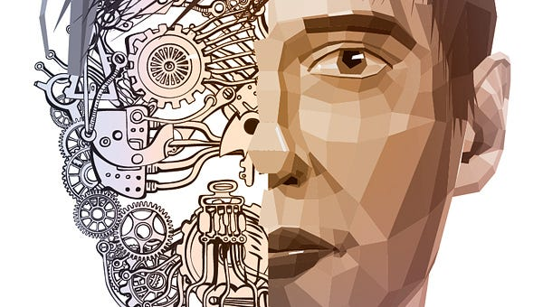

Tocco umano e tecnologia nel Customer Service

Abbiamo parlato varie volte delle chatbot e della loro importanza nel customer service odierno; abbiamo inoltre affrontato varie volte la questione che ne consegue e che vede “scontrarsi” automazione e umanizzazione, e quindi tecnologia e tocco umano.
Proviamo a vedere, quindi, cosa andrebbe automatizzato del customer service all’interno di un’azienda e cosa, al contrario, andrebbe affidato alle risorse umane.
Il trend che ha circondato l’annuncio della chatbot di Facebook ha fatto si che alcune persone pensassero a una presa del potere in stile Transformers del customer service da parte dei bot.
L’introduzione delle chatbot all’interno della sfera del customer service digitale è sempre più sorprendente perché i bot si dimostrano, a tutti gli effetti, veloci e molto efficienti. Ma gli esseri umani hanno ancora un ruolo importante da giocare all’interno dell’assistenza clienti e sempre lo avranno. Potrebbe suonare meno drammatico di un colpo di stato delle chatbot, ma il futuro del customer service sta proprio in un equilibrio tra automazione e tocco umano.
Conoscere gli innegabili vantaggi delle chatbot e farne uso, dando comunque agli operatori la libertà di connettersi con i clienti sarà proprio la chiave per fornire un servizio personalizzato ed efficiente che piace ai clienti e ispira la loro fedeltà.
Spesso, si guarda all’era in cui il customer service non era digitalizzato come a un periodo migliore, con persone vere che aiutavano i clienti e che sviluppavano solide relazioni cliente-azienda. Internet ha costruito una sorta di muro tra aziende e clienti, rendendo il customer service digitale potenzialmente più veloce, ma per certi versi anche più impersonale.
La soluzione al dilemma non sta sicuramente nel non usare più la tecnologia, poiché le chatbot e il customer care digitale possono essere proprio gli elementi caratteristici che permettono alle aziende di ottimizzare e semplificare il customer service.
Non c’è dubbio che ormai abbiamo raggiunto un momento critico, dove ognuno sta iniziando a realizzare l’importanza della customer experience e i brand hanno bisogno di superare questo muro digitale.
L’83% degli utenti americani, ad esempio, preferisce avere a che fare con esseri umani piuttosto che interfacciarsi con mezzi digitali per risolvere problemi di customer care, secondo una ricerca di Accenture.
Ma questo non significa che la tecnologia è diventata di colpo inutile.
Al contrario, le chatbot e le tecnologie avanzate di customer service sono più importanti che mai. Infatti, aziende più lungimiranti useranno proprio l’automazione per riportare l’essere umano nell’equazione della customer service.
L’inizio di una splendida amicizia
Amiamo la tecnologia e siamo grandi fan dell’innovazione.
Ma la tecnologia da sola non può fornire un customer service eccellente, perché i clienti vogliono comunicazioni personalizzate e con gli esseri umani.
Questo è il motivo per cui il 52% degli utenti hanno cambiato aziende nell’anno passato a causa di una customer care inefficiente, che non ha agevolato il contatto fra i propri clienti e propri operatori dell’assistenza clienti.
I bot sono preziosi, soprattutto quando si ha anche l’opportunità di parlare con un operatore, che per sua natura è empatico e reattivo.
Pensiamo alle storie molto popolari che abbiamo sentito su aziende diventate famose per aver dato un customer service memorabile, tipo Zappos, oppure Netflix o Amazon.
È difficile immaginare queste aziende guidate solo dalle chatbot per quel che riguarda l’assistenza clienti. Ma è anche difficile immaginare questo straordinario livello di customer service possibile se gli operatori non avessero avuto o non avessero in generale una tecnologia a disposizione.
I vantaggi dell’automazione nel customer service sono troppo grandi per essere ignorati.
Abbiamo la tecnologia a disposizione, perché non usarla?
Il punto sta nel sapere quando utilizzare l’automazione e quando invece affidarsi agli esseri umani.
Per farlo occorre fare delle considerazioni su cosa gli umani possono fare meglio e cosa invece è possibile lasciar fare ai bot.
Cosa dovrebbe essere automatizzato?
Dicevamo che un customer service degno di nota non è possibile senza tecnologia.
Le chatbot hanno tutti i vantaggi dei computer, sono veloci, sono logici. Nel futuro, i call center beneficeranno di tutto ciò che i bot hanno da offrire, ma si affideranno a questi solo per quel che riguarda le cose in cui riescono meglio, ossia l’assistenza di primo livello — il primo contatto — per domande ripetitive e frequenti e per richieste che per loro sono facili da risolvere.
Ci sono scenari molto positivi per le aziende che sanno come far lavorare l’automazione per loro.
Come punto di partenza iniziale, tutte le aziende dovrebbero offrire delle live chat proattive.
Le chatbot automatiche cercheranno di scovare gli utenti che danno un’occhiata al sito e li contatteranno in base a ciò che stanno cercando. Questo tipo di proattività ha effetti positivi sia sulle vendite che sulla customer satisfaction, ma è spesso un carico di lavoro molto grande se a eseguirlo sono delle risorse, soprattutto quando i clienti sono molti e il team è piccolo. I bot danno quindi la libertà agli operatori di svolgere altri importanti compiti.
Un sistema di smistamento ticket è un’altra caratteristica vitale del customer service automatizzato. Uno smistamento intelligente soprattutto nel customer service digitale dove le aspettative per una risposta veloce e personalizzata sono molto alte, è il modo migliore per comprendere entrambi i mondi.
Il massimo sarebbe usare la tecnologia per portare gli utenti verso gli operatori reali se e quando ne hanno bisogno.
Cosa dovrebbe avere il tocco umano?
In futuro, quindi, gli operatori si concentreranno sulle richieste complesse.
Fondamentalmente, la tecnologia si occuperà di tutto ciò che è ripetuto, “liberando” le risorse umane e permettendo loro di fare ciò che riescono meglio, comunicare con i clienti sfruttando la propria naturale empatia.
Questo sarà un cambiamento sistematico nel modo in cui pensiamo e mettiamo in atto il customer service.
Per fare in modo di coltivare il tocco umano nel customer service, le aziende dovrebbero fare tre cose:
- Riconoscere l’importanza dell’empatia
- Favorire continuamente connessioni personali
- Favorire continuamente punti di contatto con i clienti
Il customer service dovrebbe essere sempre meno “soddisfare” semplicemente gli utenti e sempre più far provare un’esperienza di customer service piacevole e senza problemi.
Ma anche nella fase iniziale, prima di fare un acquisto su un sito ad esempio, le chatbot possono mettersi in contatto con il cliente e guidarlo.
I bot si occupano dei problemi risolvibili, portando i clienti verso gli operatori che possono poi sviluppare e sostenere relazioni con gli utenti di volta in volta. Questo tradotto significa fedeltà del cliente.
L’equilibrio tra automazione e umanizzazione. dunque, avrà successo utilizzando i vantaggi della tecnologia senza trascurare i contatti umani vecchia maniera.
Vuoi provare un servizio di assistenza clienti che mescoli automazione intelligente e tocco umano?
Valentina Mangia